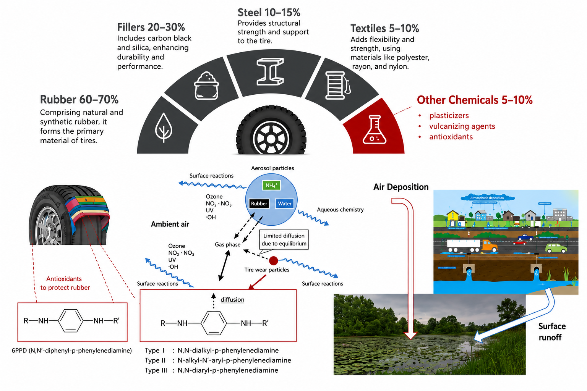
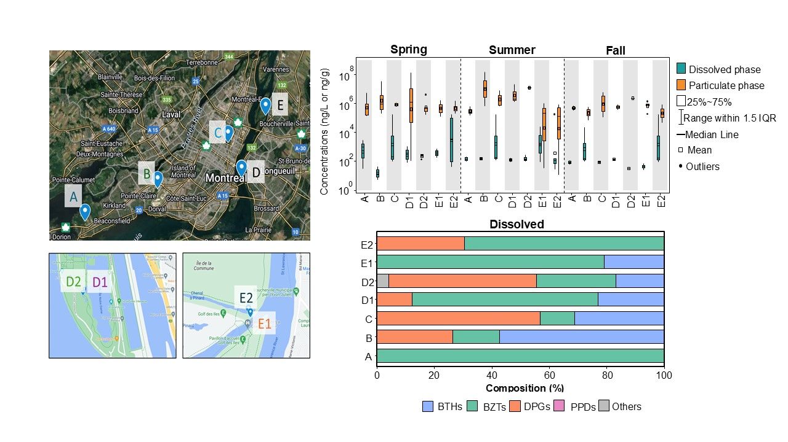
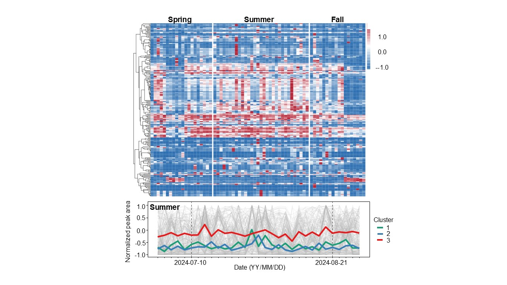
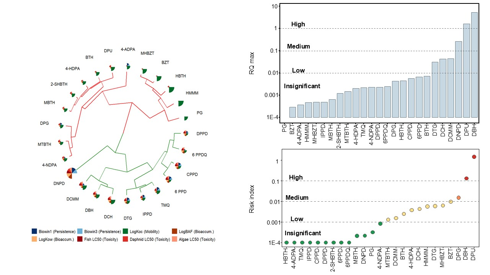
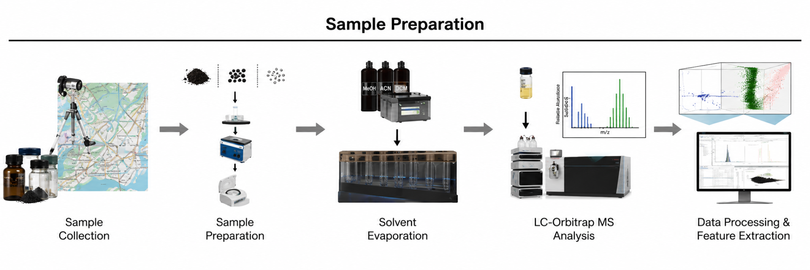

Characterizing the Spatiotemporal Distribution, Phase Partitioning, and Environmental Fate of Rubber-Derived Chemicals in Urban Surface Waters
Ready for submission to Science of The Total Environment (2026)




